Inhalt Index DeskTop Bronstein

 Funktionalanalysis Stetige lineare Operatoren und Funktionale Lineare stetige Operatoren in Banach-Räumen
Funktionalanalysis Stetige lineare Operatoren und Funktionale Lineare stetige Operatoren in Banach-Räumen


Seien  und
und  beliebige normierte Räume und 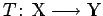 ein linearer, nicht unbedingt stetiger Operator. Dann besitzt T einen stetigen Inversen 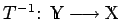, wenn 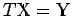 und mit einer Konstanten m>0 für alle 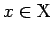 die Abschätzung 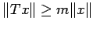 gilt. Man hat dann sogar
beliebige normierte Räume und 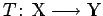 ein linearer, nicht unbedingt stetiger Operator. Dann besitzt T einen stetigen Inversen 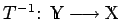, wenn 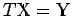 und mit einer Konstanten m>0 für alle 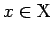 die Abschätzung 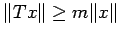 gilt. Man hat dann sogar
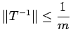.
Im Falle von BANACH-Räumen 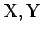 gilt der Satz von BANACH.